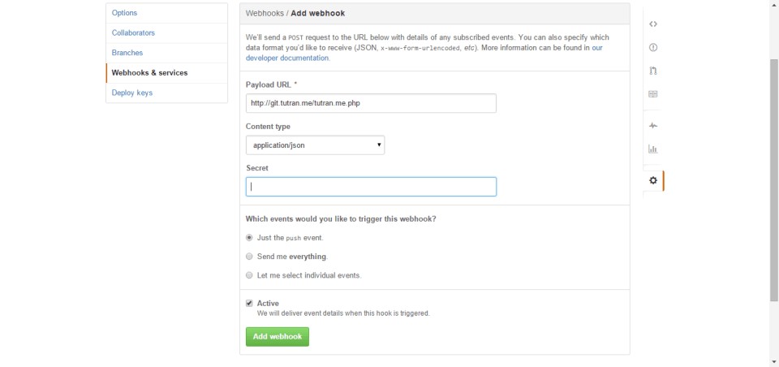

Goắt sặp :]] Sau 4 tháng mình đã quay trở lại là lợi hại hơn xưa =]]
Bạn là 1 developer, đặc biệt là bạn đang phải làm việc với server. Ví dụ bạn lập trình phát triến ứng dụng Web chẳng hạn. Bạn thường phải làm việc với 1 team thì việc sử dụng git để quản lý version cho code là điều dễ hiểu. Một vấn đề thường gặp là làm thế nào để đồng bộ code ở git và server?
Có 1 cách khá nhanh gọn là là cài git lên server của chính bạn, nhưng ở bài này mình sẽ sử dụng phương án khác đó là sử dụng các máy chủ git có sẵn như GitHub, Bitbucket, GitLab,…
Ở đây mình sẽ sử dụng GitHub để làm ví dụ.
Như github.com bạn vào phần setting của repo sẽ thấy 1 phần Webhooks & services - tính năng này để github thông báo cho server bạn biết khi có bất cứ 1 event nào xảy ra với repo của bạn.
1) Đầu tiên bạn tạo file git-puller.sh để thực thi pull repo về khi chạy file này
cd /srv/www/www.domain.com/public_html && git pull
2) Tạo file git-hook.php để nhận sự kiện từ GitHub gửi đến
Bước phụ thêm của bước này là bạn tạo thêm 1 file github.txt như đường dẫn đã config ở file git-hook.php để ghi lại log của các lần thực thi.
Bạn để file git-hook.php ở 1 chỗ nào đó sao ta có thể truy cập vào theo đường dẫn kiểu abc.com/git-hook.php chẳng hạn. Theo lời khuyên của mình là tạo hẳn 1 sub domain riêng để chuyên quản lý việc này. Ví dụ như của mình: http://git.tutran.me/tutran.me.php
3) Tiếp theo bạn vào phần setting của repo rồi chọn đến phần Webhooks & services rồi chọn Add webhook:

4) Tiếp đến là clone repo của mình lên server
git clone https://github.com/username/myrepo.git
Lời khuyên của mình là lên clone tại 1 thư mục riêng rồi sau đó symlink đến đường dẫn để Web server thực thi. Nếu bạn chưa từng làm có thể tìm hiểu về symlink (tự tìm hiểu nhé).
Và chắc chắn rằng trao quyền cho web user để thực thi, ví dụ ở đây server của mình dùng nginx:
chown -R nginx:nginx *
Cơ chế ở đây như sau:
Đầu tiên bạn push code của bạn lên GitHub.com
Sau đó GitHub gửi 1 request đến server của mình.
Tiếp đến server của mình nhận request và thực thi file git-puller.sh để pull repo ở version mới nhất về. Done!
5) Lưu ý
Còn thiếu 1 bước cực kì quan trọng đó là phải phải trao quyền sudo cho file git-puller.sh thì câu lệnh trong đó mới được thực thi, vì ta đang điều khiển nó ở dạng web user.
Bằng cách: Bạn login với quyền root rồi gõ lệnh: visudo rồi chèn thêm dòng này vào cuối file
nginx ALL=NOPASSWD: /srv/www/www.domain.com/public_html/git-puller.sh
Bạn có thể thay ngix bằng web user của bạn đang dùng, ví dụ của apache là: www-data. Và đảm bảo chắc chắn chạy ngon lành bạn hãy CHMOD git-puller.sh là 777.
6) Enjoy it!
Xong! Công việc đã hoàn tất. Bây giờ bạn chỉ việc push code lên github.com còn việc đồng bộ dữ liệu lên server cứ để GitHub lo.
Bạn có thể theo dõi thông qua log tại file: github.txt mà ở bước 2 bạn đã tạo hoặc ngay trên github.com ở phần quản lý các webhook đã tạo.